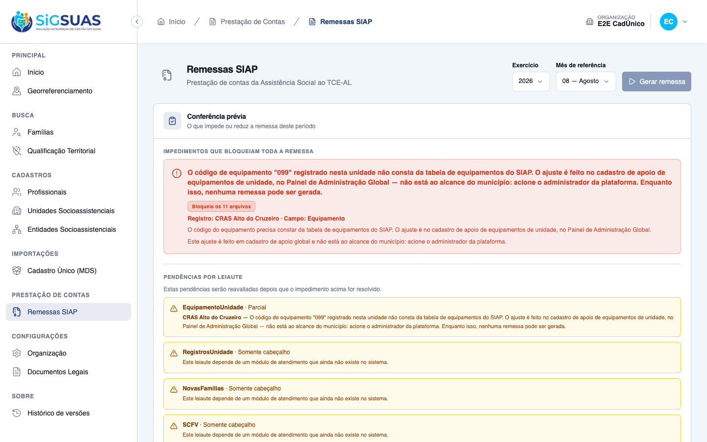
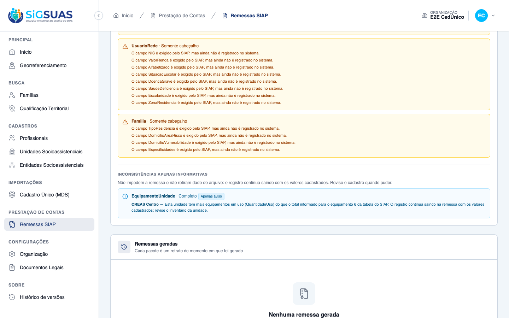

Relatório de Critérios de Aceite — HU #10372 (US-SIAP-05)
Resumo
14 critérios avaliados (CA01–CA10 com os desdobramentos CA05b, CA06b, CA06c e CA07b),
mais a RN08 e a zona nova do client/ — todos atendidos, nenhum reprovado.
Esta HU não constrói o leiaute: ele já existia e já consolidava. Ela fecha quatro lacunas —
validar o código contra a Tabela 35 (com bloqueio), avisar quando a quantidade em uso supera a
total, omitir o equipamento zerado e impedir que um simples aviso rebaixe o leiaute a
"Parcial". Por isso CA01–CA04 e CA08–CA10 são regressão: passavam antes e
precisavam continuar passando depois.
A novidade que o município vê é a terceira zona da conferência prévia. Nasce aqui o
escopo informative (D05): a pendência que avisa sem tirar dado do arquivo. A
distinção só tem valor se estiver na tela — misturá-la com a âmbar de leiaute diria ao município
que ele perdeu conteúdo que não perdeu. Daí a zona própria, de menor peso visual, com o texto
explícito e o outcome "Completo" ao lado do aviso.
E a assimetria que define esta HU: o bloqueio do CA05 é o primeiro do módulo que o município não resolve sozinho — o código do tipo de equipamento é cadastro global, que só o Super Admin edita. A mensagem de pt-BR diz isso com todas as letras (D04). O ACHADO 1 registrava que o cartão da tela contradizia essa mensagem, mandando o município aos Parâmetros TCE/AL — defeito herdado da #10370, confirmado nesta HU e reportado sem correção. Esse defeito já não existe: na recaptura de 18/08/2026 o cartão traz o texto do próprio equipamento, identifica a unidade pelo nome e não oferece atalho, justamente porque o ajuste é global e não está ao alcance do município.
As quatro capturas deste dossiê foram refeitas contra a branch de integração. Motivo: depois da entrega original, a conferência prévia passou a identificar o registro pendente pelo nome e o cartão de impedimento passou a exibir o texto de consequência do próprio leiaute, em vez do texto fixo do identificador da Unidade Gestora. As imagens anteriores mostravam o comportamento antigo e não demonstravam a parte dos critérios que pede para indicar a unidade.
O comportamento de fundo não mudou: o bloqueio por código fora da tabela continua impedindo a remessa, e a inconsistência de quantidade continua sendo apenas informativa, com a geração liberada e o leiaute marcado como Completo.
Suítes anexas: 168 testes Pest (824 asserções) em --filter=Siap, todos verdes;
no client/, 1391 testes Vitest em 180 arquivos, verdes, mais
lint e build (type-check completo). Onde não há captura de tela, a
seção declara qual evidência sustenta o critério, em vez de exibir um verde genérico.
| CA | Critério | Status |
|---|---|---|
| CA01 | Inventário das unidades no leiaute (happy path) | ATENDIDO · automatizado |
| CA02 | Consolidação de aquisições distintas do mesmo equipamento (RN02 — D02) | ATENDIDO · automatizado |
| CA03 | Data da última aquisição ausente (RN05) | ATENDIDO · automatizado |
| CA04 | Consolidação quando só uma das aquisições tem data | ATENDIDO · automatizado |
| CA05 | Bloqueio por código fora da Tabela 35 (RN04 — D03/D04) | ATENDIDO · automatizado |
| CA05b | Código não numérico cai na mesma pendência | ATENDIDO · automatizado |
| CA06 | Quantidade em uso maior que a total — pendência informativa (RN06 — D05/D06) | ATENDIDO · automatizado |
| CA06b | A inconsistência é avaliada após a consolidação | ATENDIDO · automatizado |
| CA06c | Informativa não deixa o leiaute "Parcial" (D07 / RN11 / RN13) | ATENDIDO · automatizado |
| CA07 | Equipamento com quantidade zerada é omitido (RN07 — D08) | ATENDIDO · automatizado |
| CA07b | Zerado no total mas com quantidade em uso — as duas regras convivem | ATENDIDO · automatizado |
| CA08 | Unidade sem equipamento não gera linha | ATENDIDO · automatizado |
| CA09 | Município sem nenhum equipamento registrado — leiaute em branco (RN10) | ATENDIDO · automatizado |
| CA10 | Isolamento entre municípios (RN12) | ATENDIDO · automatizado |
| RN08 | Tipo de equipamento inativado no Painel Global continua saindo | ATENDIDO · automatizado |
| CLIENT | Zona informativa na conferência prévia (client/) — a novidade visual da HU | ATENDIDO · automatizado |
| §8 | Dimensionamento do impacto — consultas §8.1 a §8.4 da spec | EXECUTADO EM BASE NÃO REPRESENTATIVA |
| ACHADO 1 | O cartão de impedimento manda o município aos Parâmetros TCE/AL — contradizendo a D04 | DEFEITO CORRIGIDO — CONFIRMADO NA RECAPTURA |
| ACHADO 2 | Formato de data e tag omitida — dúvidas abertas com o Manual do SIAP | RESOLVIDO PELO MANUAL — NADA A CORRIGIR |
| ACHADO 3 | SocialUnitEquipment sem LogsActivity — o code que trava municípios não deixa rastro | A DECIDIR COM O PO |
CA01 — Inventário das unidades no leiaute (happy path) ATENDIDO · automatizado
Critério (Gherkin): Dado que "CRAS Centro" tem 10 computadores e 4 impressoras, e "CREAS" tem 6 computadores
Quando a remessa da referência 08/2026 for gerada
Então o leiaute EquipamentoUnidade traz 3 linhas
E cada linha traz NumeroMDS, Equipamento, Quantidade, QuantidadeUso e DataUltimaCompra
Natureza da evidência: este critério fala do conteúdo do arquivo. A evidência de primeira classe é o próprio trecho do EquipamentoUnidade.xml, extraído do zip de uma remessa realmente gerada pelo endpoint POST client/siap-remittances — não montado à mão. Não há tela a fotografar.
Duas unidades completas no mesmo tenant (a completude importa: desde a HU #10370 uma unidade sem NumeroMDS bloqueia a remessa inteira e mascararia este critério). Inventário: computador (código 2) 10/8 e impressora (código 6) 4/4 no CRAS; computador 6/5 no CREAS. Remessa gerada de verdade, XML extraído do zip.
Resultado: 3 linhas, duas com o NumeroMDS do CRAS e uma com o do CREAS; os cinco campos do Manual presentes em cada uma, na ordem da tabela. Nenhuma pendência — inventário coerente não tem o que reportar.
<?xml version="1.0"?>
<SIAP>
<Codigo>004821</Codigo>
<Exercicio>2026</Exercicio>
<Mes>07</Mes>
<EquipamentoUnidade>
<NumeroMDS>3444306986234</NumeroMDS>
<Equipamento>2</Equipamento>
<Quantidade>10</Quantidade>
<QuantidadeUso>8</QuantidadeUso>
<DataUltimaCompra>2026-04-01</DataUltimaCompra>
</EquipamentoUnidade>
<EquipamentoUnidade>
<NumeroMDS>3444306986234</NumeroMDS>
<Equipamento>6</Equipamento>
<Quantidade>4</Quantidade>
<QuantidadeUso>4</QuantidadeUso>
<DataUltimaCompra>2026-04-02</DataUltimaCompra>
</EquipamentoUnidade>
<EquipamentoUnidade>
<NumeroMDS>8881679404805</NumeroMDS>
<Equipamento>2</Equipamento>
<Quantidade>6</Quantidade>
<QuantidadeUso>5</QuantidadeUso>
<DataUltimaCompra>2026-04-03</DataUltimaCompra>
</EquipamentoUnidade>
</SIAP>
CA02 — Consolidação de aquisições distintas do mesmo equipamento (RN02 — D02) ATENDIDO · automatizado
Critério (Gherkin): Dado que "CRAS Centro" tem 5 computadores de 10/03/2024 com 5 em uso
e 3 computadores de 20/05/2026 com 2 em uso
Quando a remessa for gerada
Então o leiaute traz UMA linha de computador para essa unidade
E Quantidade = 8, QuantidadeUso = 7 e DataUltimaCompra = 20/05/2026
Natureza da evidência: este critério fala do conteúdo do arquivo. A evidência de primeira classe é o próprio trecho do EquipamentoUnidade.xml, extraído do zip de uma remessa realmente gerada pelo endpoint POST client/siap-remittances — não montado à mão. Não há tela a fotografar.
Duas linhas de inventário na pivot para o mesmo par (unidade, equipamento) — a unicidade do par foi removida em 2026_06_10_165513_drop_unique_from_social_unit_..., e é exatamente isso que a consolidação existe para resolver.
Resultado: UMA linha, Quantidade 8 (5+3), QuantidadeUso 7 (5+2) e a data mais recente das duas. A D02 desta HU ratifica a consolidação: ela deixa de ser decisão provisória do time e passa a ser regra aprovada pelo PO.
Ressalva de formato, não de valor: o CA escreve a data como 20/05/2026 e o arquivo emite 2026-05-20 (ISO). É a data certa, no formato que SiapValueFormatter::date() usa desde a HU #10367 em todos os 11 leiautes. O formato exigido pelo Manual nunca foi verificado — risco §17.6 da spec, fora do escopo desta HU e registrado na seção ACHADOS.
<?xml version="1.0"?>
<SIAP>
<Codigo>004821</Codigo>
<Exercicio>2026</Exercicio>
<Mes>07</Mes>
<EquipamentoUnidade>
<NumeroMDS>1807859885653</NumeroMDS>
<Equipamento>2</Equipamento>
<Quantidade>8</Quantidade>
<QuantidadeUso>7</QuantidadeUso>
<DataUltimaCompra>2026-05-20</DataUltimaCompra>
</EquipamentoUnidade>
</SIAP>
CA03 — Data da última aquisição ausente (RN05) ATENDIDO · automatizado
Critério (Gherkin): Dado um registro de equipamento sem data de aquisição
Quando a remessa for gerada
Então o equipamento consta com DataUltimaCompra vazio
E nenhuma pendência é gerada por isso
Natureza da evidência: este critério fala do conteúdo do arquivo. A evidência de primeira classe é o próprio trecho do EquipamentoUnidade.xml, extraído do zip de uma remessa realmente gerada pelo endpoint POST client/siap-remittances — não montado à mão. Não há tela a fotografar.
Uma impressora (código 6) com 4 unidades, 3 em uso e last_purchase_date nulo. DataUltimaCompra é o único campo opcional do leiaute.
Resultado: o equipamento consta, e nenhuma pendência foi emitida. Campo vazio materializa-se como ausência da tag: o SiapXmlWriter omite o elemento de valor nulo, comportamento uniforme dos 11 leiautes desde a #10367.
Ressalva de leitura, registrada e não corrigida: o exemplo §9 da spec desenha a tag vazia (<DataUltimaCompra></DataUltimaCompra>) e o arquivo omite a tag inteira. Divergência entre o exemplo da spec e o writer, não entre o código e o CA — o CA pede "vazio", e a decisão do writer é anterior a esta HU. Vale confirmar com o TCE-AL qual das duas formas o parser dele aceita (ver ACHADOS).
<?xml version="1.0"?>
<SIAP>
<Codigo>004821</Codigo>
<Exercicio>2026</Exercicio>
<Mes>07</Mes>
<EquipamentoUnidade>
<NumeroMDS>2961892450297</NumeroMDS>
<Equipamento>6</Equipamento>
<Quantidade>4</Quantidade>
<QuantidadeUso>3</QuantidadeUso>
</EquipamentoUnidade>
</SIAP>{
"cenario": "CA03 — registro sem data de aquisicao",
"pendencias": []
}
CA04 — Consolidação quando só uma das aquisições tem data ATENDIDO · automatizado
Critério (Gherkin): Dado duas impressoras, uma com data 15/02/2025 e outra sem data
Quando a remessa for gerada
Então a linha consolidada traz DataUltimaCompra = 15/02/2025
Natureza da evidência: este critério fala do conteúdo do arquivo. A evidência de primeira classe é o próprio trecho do EquipamentoUnidade.xml, extraído do zip de uma remessa realmente gerada pelo endpoint POST client/siap-remittances — não montado à mão. Não há tela a fotografar.
Duas aquisições do código 6, uma datada de 15/02/2025 e outra sem data. O critério existe para provar que o max() da consolidação ignora o nulo em vez de ser envenenado por ele.
Resultado: uma linha, Quantidade 2 e a única data informada preservada. Mesma ressalva de formato ISO do CA02.
<?xml version="1.0"?>
<SIAP>
<Codigo>004821</Codigo>
<Exercicio>2026</Exercicio>
<Mes>07</Mes>
<EquipamentoUnidade>
<NumeroMDS>3370923467683</NumeroMDS>
<Equipamento>6</Equipamento>
<Quantidade>2</Quantidade>
<QuantidadeUso>2</QuantidadeUso>
<DataUltimaCompra>2025-02-15</DataUltimaCompra>
</EquipamentoUnidade>
</SIAP>
CA05 — Bloqueio por código fora da Tabela 35 (RN04 — D03/D04) ATENDIDO · automatizado
Critério (Gherkin): Dado um tipo de equipamento vinculado a uma unidade com código fora de 1..14
Quando eu solicitar a geração da remessa
Então a remessa não é gerada
E a conferência aponta pendência impeditiva indicando a unidade e o equipamento
E a mensagem diz que o ajuste é no cadastro de apoio, no Painel de Administração Global
Natureza da evidência: a recusa é do endpoint. A evidência de primeira classe é o 422 do POST client/siap-remittances somado ao payload do GET /pre-check, preservados em payloads/. Um código inválido de cada vez, porque qualquer um deles sozinho derruba a remessa inteira.
Um tipo de equipamento com código 099 — numérico, mas fora de 1..14 — vinculado a uma unidade completa. Antes desta HU esse código saía no arquivo como 99, sem pendência nenhuma: só código não numérico era detectado.
Resultado: 422, remessa não criada, e pendência de escopo blocking com kind = domain_unmapped, identificando a unidade por subject_uuid e citando o código recusado. A mensagem pt-BR nomeia o Painel de Administração Global e diz com todas as letras que não está ao alcance do município — é a D04, e é o que diferencia esta HU das anteriores: em #10370 e #10371 o município resolvia sozinho; aqui, não.

{
"cenario": "CA05 — tipo de equipamento com codigo \"099\" (fora de 1..14) vinculado a uma unidade",
"unidade_uuid": "840e9ab0-3a79-4b32-822a-a9f6aff15846",
"POST /siap-remittances": {
"status": 422,
"body": {
"message": "The SIAP remittance cannot be generated: 1 equipment type linked to the social units has a code outside the SIAP equipment table. The fix is made in the social unit equipment support register, in the Global Administration Panel — contact the platform administrator. Check which ones in the pre-check screen.",
"errors": {
"social_unit_equipments": [
"The SIAP remittance cannot be generated: 1 equipment type linked to the social units has a code outside the SIAP equipment table. The fix is made in the social unit equipment support register, in the Global Administration Panel — contact the platform administrator. Check which ones in the pre-check screen."
]
}
}
},
"GET /pre-check.blocking": {
"can_generate": false,
"pendencies": [
{
"scope": "blocking",
"kind": "domain_unmapped",
"field_name": "Equipamento",
"subject_type": "social_unit",
"subject_uuid": "840e9ab0-3a79-4b32-822a-a9f6aff15846",
"affected_count": 1,
"message_key": "siap_remittance.pendency.equipment_code_unmapped",
"message": "The equipment code \"099\" registered in this unit is not listed in the SIAP equipment table. The fix is made in the social unit equipment support register, in the Global Administration Panel — it is out of the municipality reach: contact the platform administrator. Until then, no remittance can be generated.",
"blocks_entire_remittance": true,
"affected_layouts": 11,
"resolution": {
"resource": "tenant-tce-parameters",
"requires_role": "master"
}
}
]
},
"GET /pre-check.summary": {
"layout_count": 11,
"record_count": 1,
"blocking_pendency_count": 1,
"informative_pendency_count": 0,
"layout_pendency_count": 17
}
}As mensagens do payload acima saem em en porque o ambiente de teste roda com esse locale. As de produção (pt-BR) — que são as que o município lê, e onde a D04 se verifica — estão abaixo:
{
"nota": "Mensagens em pt-BR (o dump de payload roda com locale en). D04 da HU #10372: a mensagem tem de dizer que a correcao e no Painel de Administracao Global.",
"pendencia.equipment_code_unmapped": "O código de equipamento \"099\" registrado nesta unidade não consta da tabela de equipamentos do SIAP. O ajuste é feito no cadastro de apoio de equipamentos de unidade, no Painel de Administração Global — não está ao alcance do município: acione o administrador da plataforma. Enquanto isso, nenhuma remessa pode ser gerada.",
"pendencia.equipment_quantity_inconsistent": "Esta unidade tem mais equipamentos em uso (QuantidadeUso) do que o total informado para o equipamento 2 da tabela do SIAP. O registro continua saindo na remessa com os valores cadastrados; revise o inventário da unidade.",
"recusa.blocked_equipment_code_unmapped (1)": "A remessa SIAP não pode ser gerada: 1 tipo de equipamento vinculado às unidades está com código fora da tabela de equipamentos do SIAP. O ajuste é feito no cadastro de apoio de equipamentos de unidade, no Painel de Administração Global — acione o administrador da plataforma. Veja quais na conferência prévia.",
"recusa.blocked_equipment_code_unmapped (3)": "A remessa SIAP não pode ser gerada: 3 tipos de equipamento vinculados às unidades estão com código fora da tabela de equipamentos do SIAP. O ajuste é feito no cadastro de apoio de equipamentos de unidade, no Painel de Administração Global — acione o administrador da plataforma. Veja quais na conferência prévia."
}
CA05b — Código não numérico cai na mesma pendência ATENDIDO · automatizado
Critério (Gherkin): Dado um tipo de equipamento com código não numérico
Quando eu solicitar a geração da remessa
Então a remessa não é gerada, pela mesma pendência
Mesmo cenário do CA05, com código XPTO. Prova que a validação da Tabela 35 engloba o caso que já era detectado, em vez de criar um segundo caminho paralelo.
Resultado: 422 com o mesmo errorCode (siap_equipment_code_unmapped) e a mesma pendência bloqueante.
{
"cenario": "CA05b — tipo de equipamento com codigo nao numerico (\"XPTO\")",
"unidade_uuid": "057af3ec-1cf4-4cd4-9677-a54897ad5c09",
"POST /siap-remittances": {
"status": 422,
"body": {
"message": "The SIAP remittance cannot be generated: 1 equipment type linked to the social units has a code outside the SIAP equipment table. The fix is made in the social unit equipment support register, in the Global Administration Panel — contact the platform administrator. Check which ones in the pre-check screen.",
"errors": {
"social_unit_equipments": [
"The SIAP remittance cannot be generated: 1 equipment type linked to the social units has a code outside the SIAP equipment table. The fix is made in the social unit equipment support register, in the Global Administration Panel — contact the platform administrator. Check which ones in the pre-check screen."
]
}
}
},
"GET /pre-check.blocking": {
"can_generate": false,
"pendencies": [
{
"scope": "blocking",
"kind": "domain_unmapped",
"field_name": "Equipamento",
"subject_type": "social_unit",
"subject_uuid": "057af3ec-1cf4-4cd4-9677-a54897ad5c09",
"affected_count": 1,
"message_key": "siap_remittance.pendency.equipment_code_unmapped",
"message": "The equipment code \"XPTO\" registered in this unit is not listed in the SIAP equipment table. The fix is made in the social unit equipment support register, in the Global Administration Panel — it is out of the municipality reach: contact the platform administrator. Until then, no remittance can be generated.",
"blocks_entire_remittance": true,
"affected_layouts": 11,
"resolution": {
"resource": "tenant-tce-parameters",
"requires_role": "master"
}
}
]
}
}
CA06 — Quantidade em uso maior que a total — pendência informativa (RN06 — D05/D06) ATENDIDO · automatizado
Critério (Gherkin): Dado um equipamento com quantidade total 3 e quantidade em uso 5
Quando eu solicitar a conferência da referência
Então é apresentada pendência informativa identificando a unidade e o equipamento
E a geração da remessa permanece disponível
E a linha desse equipamento continua saindo no arquivo, com 3 e 5
Este é o critério que dá nome à HU no front. Nasce aqui o terceiro escopo de pendência: informative (D05) — avisa, não bloqueia e não retira o registro do arquivo. Os dois escopos que existiam não serviam: blocking trava a remessa (e o CA diz que a geração permanece disponível) e layout significa "este registro fica de fora" (e a linha deve continuar saindo).
Um computador com Quantidade 3 e QuantidadeUso 5 numa unidade completa. Três coisas precisam ser verdadeiras ao mesmo tempo, e as três estão evidenciadas: a pendência existe, can_generate continua true, e a linha sai no arquivo com os valores como o município os cadastrou — o sistema não corrige o dado dele nem decide qual dos dois números é o verdadeiro.
Resultado: pendência scope=informative, kind=inconsistent_data, identificando a unidade por subject_uuid e nomeando o equipamento na mensagem; can_generate: true; e o XML com <Quantidade>3</Quantidade> e <QuantidadeUso>5</QuantidadeUso>.
Na tela, a inconsistência ganha zona própria, abaixo da âmbar de leiaute e com peso visual menor — separada de propósito: reaproveitar o âmbar diria ao município que ele perdeu conteúdo do arquivo, que é o oposto do que aconteceu.
{
"cenario": "CA06 / CA06c — computador com Quantidade 3 e QuantidadeUso 5 numa unidade completa",
"unidade_uuid": "493c517a-eb06-4d39-805f-4ac1bb0c5abf",
"GET /pre-check.blocking.can_generate": true,
"GET /pre-check.layouts[EquipamentoUnidade]": {
"name": "EquipamentoUnidade",
"sort_order": 3,
"file_name": "EquipamentoUnidade.xml",
"outcome": "complete",
"record_count": 1,
"skipped_count": 0,
"pendencies": [
{
"scope": "informative",
"kind": "inconsistent_data",
"field_name": "QuantidadeUso",
"subject_type": "social_unit",
"subject_uuid": "493c517a-eb06-4d39-805f-4ac1bb0c5abf",
"affected_count": 1,
"message_key": "siap_remittance.pendency.equipment_quantity_inconsistent",
"message": "This unit has more equipment in use (QuantidadeUso) than the total reported for equipment 2 of the SIAP table. The record is still included in the remittance with the registered values; review the unit inventory.",
"blocks_entire_remittance": false
}
]
},
"GET /pre-check.summary": {
"layout_count": 11,
"record_count": 2,
"blocking_pendency_count": 0,
"informative_pendency_count": 1,
"layout_pendency_count": 17
}
}<?xml version="1.0"?>
<SIAP>
<Codigo>004821</Codigo>
<Exercicio>2026</Exercicio>
<Mes>07</Mes>
<EquipamentoUnidade>
<NumeroMDS>6482536449946</NumeroMDS>
<Equipamento>2</Equipamento>
<Quantidade>3</Quantidade>
<QuantidadeUso>5</QuantidadeUso>
<DataUltimaCompra>2026-03-01</DataUltimaCompra>
</EquipamentoUnidade>
</SIAP>
CA06b — A inconsistência é avaliada após a consolidação ATENDIDO · automatizado
Critério (Gherkin): Dado duas aquisições do mesmo equipamento, uma coerente (5 total, 5 em uso)
e outra incoerente (3 total, 4 em uso)
Quando eu solicitar a conferência
Então UMA pendência informativa é emitida, sobre o par consolidado (8 total, 9 em uso)
E não uma por aquisição
Nota da spec (correção de 13/08/2026): a redação original deste CA — duas aquisições coerentes isoladamente que somadas dão uso > total — é aritmeticamente impossível: se uso_i ≤ total_i para todo i, então Σuso ≤ Σtotal. O que o CA precisa provar é que a avaliação acontece sobre o valor consolidado e emite uma pendência por par, não uma por aquisição — e é isso que está evidenciado.
Resultado: duas linhas de inventário, uma pendência só, sobre o par (8, 9). Importa porque é o valor somado que vai ao Tribunal: avaliar aquisição a aquisição reportaria uma inconsistência que o arquivo não contém — ou deixaria de reportar a que ele contém.
{
"cenario": "CA06b — duas aquisicoes (5/5 e 3/4) do mesmo equipamento: a avaliacao acontece sobre o par consolidado (8 total, 9 em uso) e emite UMA pendencia, nao uma por aquisicao",
"pendencias": [
{
"scope": "informative",
"kind": "inconsistent_data",
"field_name": "QuantidadeUso",
"subject_type": "social_unit",
"subject_uuid": "fba72438-9935-4cdb-b38c-563f7d76d024",
"affected_count": 1,
"message_key": "siap_remittance.pendency.equipment_quantity_inconsistent",
"message": "This unit has more equipment in use (QuantidadeUso) than the total reported for equipment 2 of the SIAP table. The record is still included in the remittance with the registered values; review the unit inventory.",
"blocks_entire_remittance": false
}
],
"summary": {
"layout_count": 11,
"record_count": 2,
"blocking_pendency_count": 0,
"informative_pendency_count": 1,
"layout_pendency_count": 17
}
}<?xml version="1.0"?>
<SIAP>
<Codigo>004821</Codigo>
<Exercicio>2026</Exercicio>
<Mes>07</Mes>
<EquipamentoUnidade>
<NumeroMDS>2381435364661</NumeroMDS>
<Equipamento>2</Equipamento>
<Quantidade>8</Quantidade>
<QuantidadeUso>9</QuantidadeUso>
<DataUltimaCompra>2026-01-10</DataUltimaCompra>
</EquipamentoUnidade>
</SIAP>
CA06c — Informativa não deixa o leiaute "Parcial" (D07 / RN11 / RN13) ATENDIDO · automatizado
Critério (Gherkin): Dado um leiaute cujos registros estão todos completos e há apenas pendência informativa
Quando eu abrir a conferência prévia
Então o leiaute aparece como completo, não como parcial
E a informativa não entra em blocking_pendency_count nem em layout_pendency_count
Antes desta HU, SiapLayout::outcomeFor() marcava PARTIAL com qualquer pendência. Com a D05, uma informativa passaria a dizer "Parcial" sem que nada tivesse ficado de fora — seria mentira na tela.
Resultado (mesmo cenário do CA06): outcome: "complete", skipped_count: 0, blocking_pendency_count: 0 e informative_pendency_count: 1 — o contador novo da RN13, exposto à parte e excluído dos outros dois. O leiaute tem 1 pendência e continua completo.
Na tela, a zona informativa repete o outcome do leiaute ao lado do aviso, de propósito: é ali que se lê "Completo" junto de uma pendência — a prova visual de que a informativa não rebaixou o arquivo.
{
"GET /pre-check.layouts[EquipamentoUnidade]": {
"name": "EquipamentoUnidade",
"sort_order": 3,
"file_name": "EquipamentoUnidade.xml",
"outcome": "complete",
"record_count": 1,
"skipped_count": 0,
"pendencies": [
{
"scope": "informative",
"kind": "inconsistent_data",
"field_name": "QuantidadeUso",
"subject_type": "social_unit",
"subject_uuid": "493c517a-eb06-4d39-805f-4ac1bb0c5abf",
"affected_count": 1,
"message_key": "siap_remittance.pendency.equipment_quantity_inconsistent",
"message": "This unit has more equipment in use (QuantidadeUso) than the total reported for equipment 2 of the SIAP table. The record is still included in the remittance with the registered values; review the unit inventory.",
"blocks_entire_remittance": false
}
]
},
"GET /pre-check.summary": {
"layout_count": 11,
"record_count": 2,
"blocking_pendency_count": 0,
"informative_pendency_count": 1,
"layout_pendency_count": 17
}
}
CA07 — Equipamento com quantidade zerada é omitido (RN07 — D08) ATENDIDO · automatizado
Critério (Gherkin): Dado uma unidade com um registro de veículo com quantidade total 0
Quando a remessa for gerada
Então esse equipamento não consta do leiaute
E nenhuma pendência é gerada por isso
Natureza da evidência: este critério fala do conteúdo do arquivo. A evidência de primeira classe é o próprio trecho do EquipamentoUnidade.xml, extraído do zip de uma remessa realmente gerada pelo endpoint POST client/siap-remittances — não montado à mão. Não há tela a fotografar.
As colunas quantity e quantity_in_use são unsignedSmallInteger com default(0) — zero é o estado natural de um vínculo criado sem inventário. Antes desta HU, esse vínculo saía no arquivo com <Quantidade>0</Quantidade>.
Cenário: veículo próprio (código 14) com total 0, e impressora (código 6) com 2.
Resultado: uma linha só, a do código 6. O zerado não consta, e nenhuma pendência foi emitida — zero não é erro de cadastro, é ausência de equipamento (D08). A verificação é sobre a quantidade consolidada.
<?xml version="1.0"?>
<SIAP>
<Codigo>004821</Codigo>
<Exercicio>2026</Exercicio>
<Mes>07</Mes>
<EquipamentoUnidade>
<NumeroMDS>8068915511411</NumeroMDS>
<Equipamento>6</Equipamento>
<Quantidade>2</Quantidade>
<QuantidadeUso>2</QuantidadeUso>
</EquipamentoUnidade>
</SIAP>{
"cenario": "CA07 — vinculo com quantidade total 0",
"leiaute": {
"name": "EquipamentoUnidade",
"sort_order": 3,
"file_name": "EquipamentoUnidade.xml",
"outcome": "complete",
"record_count": 1,
"skipped_count": 0,
"pendencies": []
},
"summary": {
"layout_count": 11,
"record_count": 2,
"blocking_pendency_count": 0,
"informative_pendency_count": 0,
"layout_pendency_count": 17
}
}
CA07b — Zerado no total mas com quantidade em uso — as duas regras convivem ATENDIDO · automatizado
Critério (Gherkin): Dado um registro com quantidade total 0 e quantidade em uso 2
Quando a remessa for gerada
Então a linha não consta do leiaute
E uma pendência informativa é emitida, porque o cadastro está contraditório
O caso que obriga a RN06 e a RN07 a conviverem: a RN07 tira a linha, e a RN06 avisa. Zero no total com uso positivo não é ausência de equipamento — é cadastro contraditório, e o município precisa saber.
Resultado: nenhum registro <EquipamentoUnidade> no arquivo (só o cabeçalho), e uma pendência scope=informative / kind=inconsistent_data. A pendência foi lida da tabela siap_remittance_pendencies, o que prova de uma vez que os valores novos cabem nas colunas (string(20) / string(40), sem enum e sem check) — nenhuma migration foi necessária.
<?xml version="1.0"?>
<SIAP>
<Codigo>004821</Codigo>
<Exercicio>2026</Exercicio>
<Mes>07</Mes>
</SIAP>{
"cenario": "CA07b — quantidade total 0 com quantidade em uso 2",
"leiaute": {
"name": "EquipamentoUnidade",
"sort_order": 3,
"file_name": "EquipamentoUnidade.xml",
"outcome": "header_only",
"record_count": 0,
"skipped_count": 0,
"pendencies": [
{
"scope": "informative",
"kind": "inconsistent_data",
"field_name": "QuantidadeUso",
"subject_type": "social_unit",
"subject_uuid": "b04165bf-0b07-4f85-8192-89043639abdd",
"affected_count": 1,
"message_key": "siap_remittance.pendency.equipment_quantity_inconsistent",
"message": "This unit has more equipment in use (QuantidadeUso) than the total reported for equipment 4 of the SIAP table. The record is still included in the remittance with the registered values; review the unit inventory.",
"blocks_entire_remittance": false
}
]
},
"pendencias": [
{
"scope": "informative",
"kind": "inconsistent_data",
"field_name": "QuantidadeUso",
"subject_type": "social_unit",
"subject_uuid": "b04165bf-0b07-4f85-8192-89043639abdd",
"affected_count": 1,
"message_key": "siap_remittance.pendency.equipment_quantity_inconsistent",
"message": "This unit has more equipment in use (QuantidadeUso) than the total reported for equipment 4 of the SIAP table. The record is still included in the remittance with the registered values; review the unit inventory.",
"blocks_entire_remittance": false
}
],
"summary": {
"layout_count": 11,
"record_count": 1,
"blocking_pendency_count": 0,
"informative_pendency_count": 1,
"layout_pendency_count": 17
}
}
CA08 — Unidade sem equipamento não gera linha ATENDIDO · automatizado
Critério (Gherkin): Dado que "CRAS Rural" não tem nenhum equipamento registrado
Quando a remessa for gerada
Então nenhuma linha dessa unidade consta do leiaute
E isso não gera pendência
Natureza da evidência: este critério fala do conteúdo do arquivo. A evidência de primeira classe é o próprio trecho do EquipamentoUnidade.xml, extraído do zip de uma remessa realmente gerada pelo endpoint POST client/siap-remittances — não montado à mão. Não há tela a fotografar.
Duas unidades completas no tenant; só uma tem inventário. Regressão: já passava antes desta HU, e o risco era a RN07 nova passar a tratar "sem equipamento" como "equipamento zerado" e emitir pendência.
Resultado: uma linha, a da unidade com inventário; o NumeroMDS da unidade sem equipamento não aparece em lugar nenhum do arquivo; nenhuma pendência.
<?xml version="1.0"?>
<SIAP>
<Codigo>004821</Codigo>
<Exercicio>2026</Exercicio>
<Mes>07</Mes>
<EquipamentoUnidade>
<NumeroMDS>8542245192487</NumeroMDS>
<Equipamento>2</Equipamento>
<Quantidade>3</Quantidade>
<QuantidadeUso>3</QuantidadeUso>
</EquipamentoUnidade>
</SIAP>
CA09 — Município sem nenhum equipamento registrado — leiaute em branco (RN10) ATENDIDO · automatizado
Critério (Gherkin): Dado que nenhuma unidade do município tem equipamento registrado
Quando a remessa for gerada
Então o leiaute é entregue em branco, com Codigo, Exercicio e Mes
Natureza da evidência: este critério fala do conteúdo do arquivo. A evidência de primeira classe é o próprio trecho do EquipamentoUnidade.xml, extraído do zip de uma remessa realmente gerada pelo endpoint POST client/siap-remittances — não montado à mão. Não há tela a fotografar.
"Enviar em branco" não é o mesmo que "não enviar": o arquivo continua no pacote, com o cabeçalho completo e outcome = header_only registrado em siap_remittance_layouts.
Resultado: <Codigo>, <Exercicio> e <Mes> presentes; nenhuma tag <EquipamentoUnidade>.
<?xml version="1.0"?>
<SIAP>
<Codigo>004821</Codigo>
<Exercicio>2026</Exercicio>
<Mes>07</Mes>
</SIAP>
CA10 — Isolamento entre municípios (RN12) ATENDIDO · automatizado
Critério (Gherkin): Dado equipamentos registrados em unidades de outros municípios
Quando a remessa do meu município for gerada
Então o leiaute contém exclusivamente equipamentos de unidades do meu município
Natureza da evidência: este critério fala do conteúdo do arquivo. A evidência de primeira classe é o próprio trecho do EquipamentoUnidade.xml, extraído do zip de uma remessa realmente gerada pelo endpoint POST client/siap-remittances — não montado à mão. Não há tela a fotografar.
Dois tenants, cada um com uma unidade e inventário próprio (3 computadores no meu, 9 impressoras no outro). O query() do leiaute dispensa o Global Scope de tenant para poder escopar explicitamente — e é justamente por isso que este critério precisa de evidência a cada regressão. O SoftDeletingScope permanece: unidade excluída não reaparece na prestação de contas.
Resultado: uma linha, a do meu município. Nem o NumeroMDS da outra unidade nem a quantidade dela (9) aparecem no arquivo.
<?xml version="1.0"?>
<SIAP>
<Codigo>004821</Codigo>
<Exercicio>2026</Exercicio>
<Mes>07</Mes>
<EquipamentoUnidade>
<NumeroMDS>1585688806193</NumeroMDS>
<Equipamento>2</Equipamento>
<Quantidade>3</Quantidade>
<QuantidadeUso>3</QuantidadeUso>
</EquipamentoUnidade>
</SIAP>
RN08 — Tipo de equipamento inativado no Painel Global continua saindo ATENDIDO · automatizado
Critério (Gherkin): Dado um tipo de equipamento vinculado à unidade e depois INATIVADO no Painel Global
Quando a remessa for gerada
Então a linha continua saindo — o vínculo registrado na unidade é a fonte
Não é CA do artefato; é regra de negócio verificada por ser frágil por construção: o comportamento correto acontece porque a relação equipments() simplesmente não filtra is_active. Qualquer refatoração que acrescente esse filtro quebra a RN08 em silêncio.
Resultado: tipo "Aparelho de Televisão" (código 11) inativado depois de vinculado; a linha continua no arquivo.
A RN08 segue sem confirmação da área de negócio (§17.5 da spec): hoje o comportamento é herdado, não deliberado.
<?xml version="1.0"?>
<SIAP>
<Codigo>004821</Codigo>
<Exercicio>2026</Exercicio>
<Mes>07</Mes>
<EquipamentoUnidade>
<NumeroMDS>1309583383276</NumeroMDS>
<Equipamento>11</Equipamento>
<Quantidade>2</Quantidade>
<QuantidadeUso>1</QuantidadeUso>
</EquipamentoUnidade>
</SIAP>
CLIENT — Zona informativa na conferência prévia (client/) — a novidade visual da HU ATENDIDO · automatizado
Critério (Gherkin): Dado uma pendência de escopo informative no payload da conferência
Quando eu abrir a conferência prévia
Então ela aparece em zona PRÓPRIA, distinta da vermelha de impedimento e da âmbar de leiaute
E o texto diz que não impede a remessa e não retira dado do arquivo
O painel passa a ter três zonas, <section> irmãs, na ordem da severidade: impedimento (vermelha) → leiaute (âmbar) → informativa (azul-clara, o menor peso visual das três, por último).
O que mudou no código, em client/@3fa7f7e:
SiapPreflightPanel.vue— Zona C, agrupada por leiaute, com o outcome repetido ao lado (CA06c) e o texto do i18n dizendo que não impede a remessa e não retira dado do arquivo.SiapLayoutIssuesList.vue— filtra as informativas: um leiaute cujas pendências sejam todas informativas não gera cartão âmbar nenhum, e a Zona B se declara vazia. Sem esse filtro, a D05 seria desfeita na última milha.SiapRemittanceHttp.ts—SiapPendencyScopeganha o terceiro valor e osummary, o contadorinformative_pendency_count(RN13).siap-remittances.json(pt-BR) —informative_title,informative_hinte o seloinformative_badge.
Gates verdes: npm run lint, npm run test:run (180 arquivos, 1391 testes) e npm run build (vue-tsc -b completo).
8 testes novos em SiapPreflightPanel.test.ts, entre eles: a informativa não é descendente da zona âmbar nem da vermelha; um leiaute só com informativa não vira cartão âmbar; a zona é a última das três; e, num mesmo leiaute com as duas naturezas, cada pendência vai para a sua zona.
§8 — Dimensionamento do impacto (consultas §8.1 a §8.4) EXECUTADO EM BASE NÃO REPRESENTATIVA
A spec manda rodar estas consultas em staging. Não houve acesso a staging nesta execução; foram rodadas na base local de desenvolvimento, que tem 0 unidades sociais e 0 linhas de inventário. As §8.2, §8.3 e §8.4 devolvem vazio por ausência de dado, e não por ausência de problema — nenhum número abaixo pode ser lido como dimensionamento.
O que a execução local de fato prova: os 14 tipos de equipamento semeados estão todos
dentro de 1..14, item a item, confirmando empiricamente a §3.1 da spec. O que ela
não prova: que produção esteja igual. O risco desta HU não está no seed — está no CRUD do
Painel Global, onde o Super Admin cria e edita códigos livremente, e onde o seeder usa
firstOrCreate (não updateOrCreate), de modo que um código alterado à
mão não é corrigido ao re-semear.
Pendência para o PO (§17.1 da spec): a §8.1 precisa ser rodada em
staging/produção antes do deploy. Cada linha com municipios_afetados > 0 é um
conjunto de municípios que ficará impedido de prestar contas por um dado que não controla.
Se houver qualquer uma, isso se resolve no Painel Global antes do deploy, não depois.
Consultas de apoio §8.1–§8.4 da spec .planning/specs/10372-leiaute-equipamento-unidade.md
HU #10372 (US-SIAP-05) — leiaute EquipamentoUnidade
Executado em: 2026-08-13 16:41:24
Base: PostgreSQL LOCAL de desenvolvimento (container api-pgsql-1, db esuas).
!! RESSALVA OBRIGATORIA — A BASE LOCAL NAO E REPRESENTATIVA !!
A spec manda rodar EM STAGING (§8, nota). Nao ha acesso a staging nesta execucao.
Inventario da base local, ANTES de qualquer consulta:
tenants | social_units | social_unit_equipments | inventarios
---------+--------------+------------------------+-------------
3 | 0 | 14 | 0
(1 row)
Com 0 unidades e 0 linhas de inventario, as consultas §8.2, §8.3 e §8.4 devolvem VAZIO
por ausencia de dado, e NAO por ausencia de problema. Nenhum numero abaixo pode ser
lido como dimensionamento do impacto em producao — nem como ausencia dele.
===============================================================================
§8.1 — Tipos de equipamento com codigo fora da Tabela 35 (o que bloquearia)
E *a* consulta desta HU (D04/§17.1): cada linha com municipios_afetados > 0
e um conjunto de municipios impedido de prestar contas por dado que so o
Super Admin corrige.
===============================================================================
id | code | name | is_active | municipios_afetados | vinculos
----+------+------+-----------+---------------------+----------
(0 rows)
Conferencia complementar — os 14 codigos que HA na base local (§3.1 da spec):
code | name | is_active
------+--------------------------------+-----------
001 | Antena Parabólica | t
002 | Computador Desktop | t
003 | Computador Portátil | t
004 | Tablet | t
005 | Copiadora | t
006 | Impressora | t
007 | Impressora Multifuncional | t
008 | Scanner | t
009 | Leitor de DVD / Blu-ray | t
010 | Aparelho de som | t
011 | Aparelho de Televisão | t
012 | Lousa Digital | t
013 | Projetor Multimídia (datashow) | t
014 | Veículo Próprio | t
(14 rows)
===============================================================================
§8.2 — Inventarios com quantidade em uso maior que a total (informativas), apos consolidacao
===============================================================================
tenant_id | social_unit_id | code | total | em_uso
-----------+----------------+------+-------+--------
(0 rows)
===============================================================================
§8.3 — Quantas linhas a consolidacao economiza (dimensiona a RN02)
===============================================================================
tenant_id | registros_de_inventario | linhas_no_leiaute
-----------+-------------------------+-------------------
(0 rows)
===============================================================================
§8.4 — Vinculos com quantidade zerada (linhas que deixarao de sair)
===============================================================================
tenant_id | vinculos_zerados | zerados_mas_com_uso
-----------+------------------+---------------------
(0 rows)
===============================================================================
LEITURA DO RESULTADO — o que estas consultas provam e o que NAO provam
===============================================================================
PROVAM: os 14 tipos semeados na base local estao TODOS dentro de 1..14, item a item,
como a §3.1 da spec afirmou. Nenhum deles bloquearia a remessa.
NAO PROVAM: que producao esteja igual. O risco desta HU nao esta no seed — esta no
CRUD do Painel Global, onde o Super Admin cria e edita codigos livremente, e o
seeder usa firstOrCreate (nao updateOrCreate), de modo que um codigo alterado
a mao NAO e corrigido ao re-semear.
PENDENCIA PARA O PO (§17.1): a §8.1 PRECISA ser rodada em staging/producao ANTES do
deploy. Qualquer linha com municipios_afetados > 0 e um municipio que sera
impedido de gerar a remessa por dado que ele nao controla.
ACHADOS — o que esta HU reporta e não corrige
ACHADO 1 — o cartão de impedimento manda o município ao lugar errado DEFEITO CORRIGIDO — CONFIRMADO NA RECAPTURA
Desde a HU #10370, o cartão da zona de impedimento exibe o texto fixo do CARDUG para qualquer bloqueio. São dois pontos, um em cada ponta:
client/src/locales/pt-br/siap-remittances.json:39-40— as chavesblocking_consequence("O código da Unidade Gestora compõe o cabeçalho de todos os arquivos…") eblocking_action("Corrigir nos Parâmetros TCE/AL") são renderizadas para todo impedimento, qualquer que seja okind.api/…/SiapRemittancePreCheckController::blockingPayload()— devolveresolution: { resource: "tenant-tce-parameters", requires_role: "master" }hardcoded, e é isso que o front usa para decidir o atalho.
Está literalmente visível no payload do CA05 acima: a pendência é sobre código de
equipamento e o resolution.resource diz tenant-tce-parameters.
Por que nesta HU é especialmente grave. A mensagem da pendência (D04, entregue pela etapa 02) diz corretamente que o ajuste é no Painel de Administração Global e que não está ao alcance do município. O cartão, logo abaixo, oferece o botão "Corrigir nos Parâmetros TCE/AL" — um lugar onde não há nada a corrigir. A tela contradiz frontalmente a decisão vinculante que o backend acabou de implementar, e manda o Master a um beco sem saída em vez de acionar o Super Admin.
Com o quarto motivo de bloqueio (CARDUG, unidade incompleta, entidade incompleta e agora código de equipamento), o texto fixo já erra em três dos quatro casos.
Confirmado ao vivo, no ambiente real (Sail :8000 + client Vite :5175, organização
"E2E CadÚnico", unidade CRAS Centro com um tipo de código 099 vinculado).
A captura abaixo mostra, no mesmo cartão: a mensagem correta da pendência (Painel de
Administração Global, fora do alcance do município) e, logo abaixo, o parágrafo fixo do CARDUG
e o link "Corrigir nos Parâmetros TCE/AL".
Não corrigido por decisão de escopo (§7 do plano desta etapa): a correção exige
resolução por kind nas duas pontas — payload e i18n — e é HU própria, sob
decisão do usuário.
ACHADO 2 — as duas dúvidas de formato CONFIRMADAS pelo Manual; implementação já estava correta RESOLVIDO PELO MANUAL — NADA A CORRIGIR
(a) Formato da data — RESOLVIDO. SiapValueFormatter::date() emite ISO (2026-05-20) desde a HU #10367, em todos os 11 leiautes. A dúvida era que os critérios desta HU escrevem a data como 20/05/2026 e o size 10 do campo não desempata, já que ISO e dd/mm/aaaa têm 10 caracteres. A consulta ao Manual do SIAP confirmou o formato ISO, na seção de tipos de dados: “Os valores informados serão datas e deverão ser informadas no formato ISO (YYYY-MM-DD). Exemplo: 2024-01-01”. A implementação já estava correta e nada precisa mudar — a menção a 20/05/2026 nos critérios é a forma de escrever a data em português, não o formato do arquivo. (§17.6 da spec.)
(b) Campo opcional vazio — RESOLVIDO. O CA03 pede "DataUltimaCompra vazio"; o SiapXmlWriter omite a tag, enquanto o exemplo da especificação desenhava a tag vazia. A consulta ao Manual do SIAP confirmou que a ausência da tag é o recomendado para informação vazia — ou seja, a implementação já estava correta e o exemplo da especificação é que estava mais permissivo. Comportamento uniforme nos 11 leiautes e anterior a esta HU; nada muda.
ACHADO 3 — o code que trava municípios não deixa rastro A DECIDIR COM O PO
SocialUnitEquipment (lookup global) não usa LogsActivity.
A partir desta HU, o code desse lookup pode travar a remessa de vários
municípios de uma vez (D03/D04) — e sua alteração no Painel Global não fica registrada em
lugar nenhum. Achado da etapa 01, fora do escopo (D10 proíbe tocar o admin/ e o
seeder). §14 e §17.7 da spec.
ACHADO 4 — a pendência informativa não nomeava a unidade na tela RESOLVIDO — CONFIRMADO NA RECAPTURA
O CA06 pede pendência "identificando a unidade e o equipamento". Na entrega original o equipamento era nomeado ("equipamento 2 da tabela do SIAP"), mas a unidade não: a mensagem dizia apenas "Esta unidade", e a identificação existia só no dado interno da pendência, que a tela não exibia. Como a zona informativa agrupa por leiaute, um município com várias unidades inconsistentes veria N mensagens idênticas sem saber onde corrigir o inventário. Resolvido: a conferência prévia passou a interpolar a identificação do registro na mensagem, e a recaptura de 18/08/2026 confirma — "CREAS Centro — Esta unidade tem mais equipamentos em uso (QuantidadeUso) do que o total informado para o equipamento 6 da tabela do SIAP". O mesmo vale para as pendências das HUs anteriores.
Dúvidas do artefato do PO que permanecem abertas
- RN02 com o TCE-AL. A consolidação foi ratificada pelo PO (D02), mas o Tribunal nunca
confirmou. Se ele aceitar linha por aquisição, o
aggregate()some — e os CA02 e CA04 caem junto. - RN06 impeditiva ou não. Esta HU a implementa como informativa (D05). Se o TCE-AL recusar arquivos com uso > total, a pendência muda de escopo — a D05 deixa isso barato (troca do escopo na factory), mas é decisão do PO.
- RN08 com a área de negócio. Tipo inativado continuar saindo é hoje comportamento herdado, não deliberado.
- Conferência dos 14 códigos. O PO pediu; foi feita nesta spec (§3.1) e confirmada empiricamente na §8.1 acima. O seed está certo — o risco remanescente é o CRUD.
- Quatro leiautes bloqueando.
UnidadeSocial,EntidadeSociale agoraEquipamentoUnidade. A cada HU o conjunto cresce; vale uma revisão de conjunto com o PO antes que os 11 bloqueiem. (§17.2 da spec.)
Suíte automatizada — --filter=Siap
168 testes, 824 asserções, todos verdes. Inclui os CA desta HU e a não-regressão dos bloqueios das HUs #10367, #10370 e #10371.
Caveat de ambiente, pré-existente: php artisan test
--filter=Siap passou a estourar o memory_limit de 128M do ambiente local —
daí php -d memory_limit=1G vendor/bin/pest. Não é regressão desta HU.
# HU #10372 (US-SIAP-05) — Leiaute EquipamentoUnidade
# Comando: php -d memory_limit=1G vendor/bin/pest --filter=Siap
# NOTA: 'php artisan test --filter=Siap' estoura o memory_limit de 128M do ambiente
# local (pre-existente, nao e regressao desta HU) — dai o -d memory_limit=1G.
# api/ @ 7b20da5 · 2026-08-13 16:37:39
PASS Tests\Unit\Services\Siap\SiapDomainMapTest
✓ it inverts Parda and Amarela between the eSUAS and SIAP scales 0.01s
✓ it keeps the race colors that coincide in both scales
✓ it returns null for a race color without counterpart
✓ it maps social unit types to the SIAP classification
✓ it refuses to translate a unit status the SIAP does not define
✓ it derives the extinction status from the end date against the exer… 0.01s
✓ it lets the derivation win over the code chosen in the lookup (D04)
✓ it turns an extinct unit without a usable end date into a pendency (D05)
✓ it ignores the end date for statuses that are not extinction
✓ it only translates the entity status that has a safe counterpart
✓ it translates the paralysed entity added by the HU #10371 (CA05d)
✓ it derives the entity extinction status from the end date against the exercise (RN08)
✓ it turns an extinct entity without a usable end date into a pendency (D08)
✓ it keeps the four original cadastral statuses out of the SIAP scale (CA05e / D03)
✓ it ignores the end date for the entity in activity
✓ it collapses the four SUAS participation types into the three of SIAP
✓ it maps the contract modality to the SIAP scale (HU #10369 / D06)
✓ it refuses to translate a contract modality outside the SIAP scale
✓ it maps kinship to the family position scale
✓ it leaves the ambiguous education level unmapped
✓ it maps booleans to the SIM/NAO pair
✓ it strips the zero padding only for the auxiliary tables
✓ it maps the 14 equipment types of the SIAP Table 35 (RN04)
✓ it refuses an equipment code outside the SIAP Table 35 (RN04)
✓ it keeps paddedCode permissive where unitEquipment is strict (D09)
✓ it refuses a numeric value with a size different from the exact one
✓ it never sanitizes a non numeric value to make it fit
✓ it flags truncation instead of cutting text in silence
✓ it formats dates in ISO and decimals with two places
✓ it registers exactly the 11 layouts of the SIAP social assistance section
✓ it puts UnidadeSocial first, since 8 other layouts depend on it
✓ it names every file after its layout, as the Manual requires
PASS Tests\Feature\Api\SiapRemittanceGenerationTest
✓ it refuses the generation when the identifier is missing (CA06) 0.41s
✓ it refuses the generation for a legacy identifier outside the TCE-A… 0.02s
✓ it creates the remittance and dispatches the job when the identifie… 0.02s
✓ it generates a zip with all 11 layouts, including the ones without… 0.03s
✓ it emits the service agreement and the operating status as independ… 0.04s
✓ it emits the informed service agreement as SIM (CA08b) 0.03s
✓ it refuses the generation when the service agreement was never info… 0.02s
✓ it emits the unit address in the Manual order, with street number a… 0.03s
✓ it brings every unit of the municipality with the seven fields of t… 0.05s
✓ it keeps the paralysed unit inside the remittance (CA02) 0.03s
✓ it emits the unit extinct within the reference exercise as 3 (CA03) 0.03s
✓ it emits the unit extinct in a previous exercise as 4 (CA04) 0.03s
✓ it lets the end date override the status code chosen in the lookup… 0.03s
✓ it turns the extinct unit without a usable end date into a blocking… 0.03s
✓ it blocks the remittance while an inactive unit has no SIAP counter… 0.03s
✓ it translates the unit classification to the SIAP domain (CA05) 0.03s
✓ it suppresses the reference point first and keeps the complement (C… 0.04s
✓ it also suppresses the complement when the reference point is not e… 0.03s
✓ it never lets the address exceed 255 characters, not even in the wo… 0.03s
✓ it delivers the layout with the header only when there is no unit (… 0.03s
✓ it contains exclusively the units of my municipality (CA11) 0.03s
✓ it leaves the soft-deleted unit out of the remittance 0.03s
✓ it records the layout outcome of a layout without movement 0.03s
✓ it re-evaluates the block inside the job (TOCTOU) 0.02s
✓ it refuses the generation when a unit has no MDS number (CA07) 0.02s
✓ it refuses the generation when the unit classification is outside t… 0.02s
✓ it refuses the generation when the unit address has no postal code… 0.02s
✓ it counts municipalities, not fields: one unit missing two values i… 0.02s
✓ it keeps the unit block with its own message alongside the new enti… 0.03s
✓ it re-evaluates the unit block inside the job (D07/TOCTOU) 0.03s
✓ it refuses a second generation while one is still running 0.02s
✓ it never lists or downloads a remittance from another tenant 0.03s
✓ it refuses the download while the remittance is not completed 0.02s
✓ it brings every entity of the municipality with the seventeen field… 0.05s
✓ it keeps the entity without foundation date and head office CNPJ in… 0.06s
✓ it emits the declared service agreement regardless of the contract… 0.04s
✓ it emits the yes or no indicators as 1 and 2 (CA04) 0.03s
✓ it emits the entity extinct within the reference exercise as 3 (CA0… 0.04s
✓ it emits the entity extinct in a previous exercise as 4 (CA05b) 0.03s
✓ it turns the extinct entity without a usable end date into a blocki… 0.03s
✓ it emits the paralysed entity as 2 (CA05d) 0.04s
✓ it keeps the cadastral statuses without a SIAP counterpart as block… 0.03s
✓ it emits the contract amount with two decimal places and a dot sepa… 0.04s
✓ it delivers the entity layout with the header only when there is no… 0.03s
✓ it contains exclusively the entities of my municipality (CA11) 0.03s
✓ it keeps the soft deleted entity out of the file (RN01 — regressão) 0.03s
✓ it emits the entity address in the Manual order, ending with the mu… 0.03s
✓ it suppresses the entity reference point first and keeps the comple… 0.03s
✓ it also suppresses the entity complement when the reference point i… 0.03s
✓ it never lets the entity address exceed 255 characters, not even in… 0.03s
✓ it refuses the generation when an entity has no CNEAS number (CA06) 0.03s
✓ it refuses the generation when an entity has no e-mail (CA07) 0.02s
✓ it refuses the generation when an entity has no contract amount (CA… 0.03s
✓ it does not block the remittance when the contract amount is zero (… 0.03s
✓ it counts entities, not fields: one entity missing two values is on… 0.02s
✓ it evaluates the CARDUG before the entity records 0.03s
✓ it re-evaluates the entity block inside the job (TOCTOU) 0.02s
✓ it generates the remittance when every entity and unit is complete 0.04s
✓ it never carries the entity name, CNPJ or e-mail into the entity bl… 0.03s
✓ it brings the inventory of every unit into the layout (CA01) 0.04s
✓ it consolidates distinct purchases of the same equipment into one r… 0.03s
✓ it emits the equipment without a purchase date and reports nothing… 0.04s
✓ it keeps the only informed purchase date after consolidating (CA04) 0.03s
✓ it keeps the row in the file when the in-use quantity exceeds the t… 0.04s
✓ it omits the equipment with zero total quantity, without any penden… 0.03s
✓ it omits the zeroed row but still reports the contradiction (CA07b) 0.03s
✓ it reports nothing for a unit without any equipment (CA08) 0.04s
✓ it delivers the layout with header only when no unit has equipment… 0.03s
✓ it contains exclusively the equipment of my municipality (CA10) 0.03s
✓ it keeps emitting an equipment type that was deactivated in the glo… 0.04s
✓ it refuses the generation when an equipment code is outside Table 3… 0.02s
✓ it refuses the generation for a non numeric equipment code (CA05b) 0.03s
✓ it points the equipment refusal to the Global Administration Panel… 0.02s
✓ it counts equipment codes, not links: the same code in two units is… 0.02s
✓ it does not block a municipality for an invalid code it does not us… 0.04s
✓ it keeps the inventory contradiction informative after the block (D… 0.03s
✓ it re-evaluates the equipment block inside the job (TOCTOU) 0.02s
✓ it evaluates the CARDUG, the unit and the entity before the equipme… 0.03s
✓ it keeps the unit and entity blocks with their own messages (não-re… 0.03s
✓ it generates the remittance when every equipment code is inside Tab… 0.04s
PASS Tests\Feature\Api\SiapRemittancePreCheckTest
✓ it separates the blocking identifier pendency from the per-layout o… 0.03s
✓ it states that the identifier pendency blocks the entire remittance… 0.02s
✓ it still lists every layout while the remittance is blocked (CA06) 0.01s
✓ it marks per-layout pendencies as non blocking 0.02s
✓ it reports a required field that has no source in the system 0.02s
✓ it does not persist anything during the pre-check 0.02s
✓ it releases the generation when the identifier is valid 0.02s
✓ it counts records only from the active tenant 0.02s
✓ it names the entity whose service agreement was never informed (CA0… 0.03s
✓ it shows the incomplete entity pendency in the blocking zone AND in… 0.03s
✓ it counts the promoted entity pendency only once (CA12b) 0.02s
✓ it keeps record_incomplete and domain_unmapped apart after the prom… 0.03s
✓ it never carries the entity name or CNPJ into the pendency (RN09/LG… 0.03s
✓ it drops the pendency as soon as the municipality informs the value… 0.03s
✓ it turns a contract modality outside the SIAP scale into a pendency… 0.03s
✓ it stops reporting EntidadeSocial as a layout without data source 0.03s
✓ it shows the incomplete unit pendency in the blocking zone AND in t… 0.03s
✓ it counts the promoted pendency only once (D08b) 0.02s
✓ it sends the unmapped unit classification to the Global Panel (CA08… 0.03s
✓ it names the unit without postal code by uuid, never by name or add… 0.02s
✓ it keeps the CARDUG pendency blocking alongside the unit ones (não-… 0.02s
✓ it releases the pre-check as soon as every unit is complete (happy… 0.03s
✓ it rejects an invalid reference month 0.02s
✓ it accepts the special reference months 13 and 14 with (13) 0.02s
✓ it accepts the special reference months 13 and 14 with (14) 0.02s
✓ it reports the inventory contradiction without blocking the generat… 0.02s
✓ it evaluates the contradiction over the consolidated value, not per… 0.02s
✓ it emits one informative pendency per consolidated pair, not per pu… 0.03s
✓ it does not turn the layout partial because of an informative pende… 0.02s
✓ it counts the informative pendency apart from the blocking and layo… 0.03s
✓ it still marks the layout partial for a pendency that removes a rec… 0.03s
✓ it shows the equipment code pendency in the blocking zone AND in th… 0.02s
✓ it blocks the pre-check for a non numeric equipment code as well (C… 0.02s
✓ it names the offending code and the Global Panel in the equipment p… 0.02s
✓ it counts the promoted equipment pendency only once 0.02s
✓ it keeps the informative pendency out of the blocking zone (D05) 0.02s
✓ it still releases the generation when only the inventory is contrad… 0.02s
PASS Tests\Feature\Api\SocialEntityControllerTest
✓ it CA02: store requires all mandatory SIAP layout fields with ('cne… 0.04s
✓ it CA02: store requires all mandatory SIAP layout fields with ('leg… 0.03s
✓ it CA02: store requires all mandatory SIAP layout fields with ('cnp… 0.02s
✓ it CA02: store requires all mandatory SIAP layout fields with ('hea… 0.02s
✓ it CA02: store requires all mandatory SIAP layout fields with ('ema… 0.02s
✓ it CA02: store requires all mandatory SIAP layout fields with ('add… 0.03s
✓ it CA02: store requires all mandatory SIAP layout fields with ('soc… 0.02s
✓ it CA02: store requires all mandatory SIAP layout fields with ('loc… 0.06s
✓ it CA02: store requires all mandatory SIAP layout fields with ('sua… 0.06s
✓ it CA02: store requires all mandatory SIAP layout fields with ('con… 0.03s
✓ it CA02: store requires all mandatory SIAP layout fields with ('has… 0.03s
✓ it CA02: store requires all mandatory SIAP layout fields with ('pro… 0.03s
✓ it CA02: store requires all mandatory SIAP layout fields with ('exe… 0.02s
✓ it CA02: store requires all mandatory SIAP layout fields with ('has… 0.03s
✓ it CA02: store requires all mandatory SIAP layout fields with ('con… 0.03s
PASS Tests\Feature\Api\TenantTceParameterControllerTest
✓ it saves the TCE parameters without the identifier and warns about… 0.02s
PASS Tests\Feature\Api\TenantTceParameterSiapReadinessTest
✓ it does not block other modules when the identifier is missing (RN1… 0.03s
✓ it reports readiness as true once the identifier is in the TCE-AL f… 0.02s
✓ it reports readiness as false for a legacy value outside the TCE-AL… 0.02s
Tests: 168 passed (824 assertions)
Duration: 4.60s